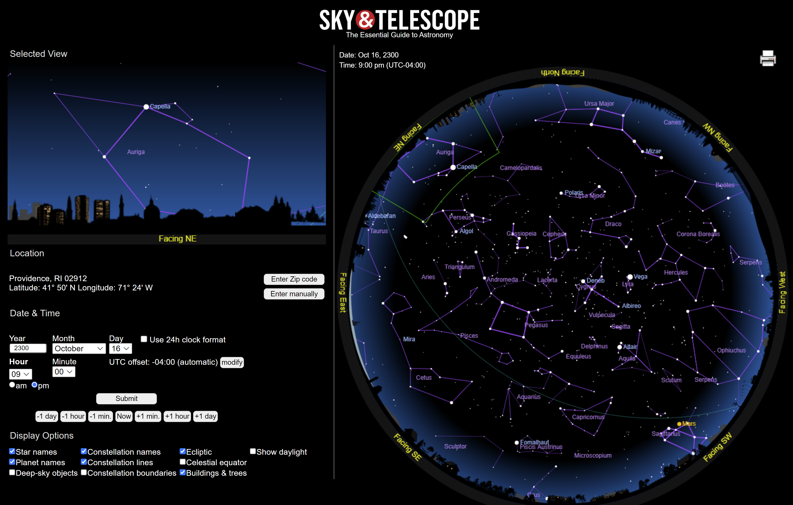
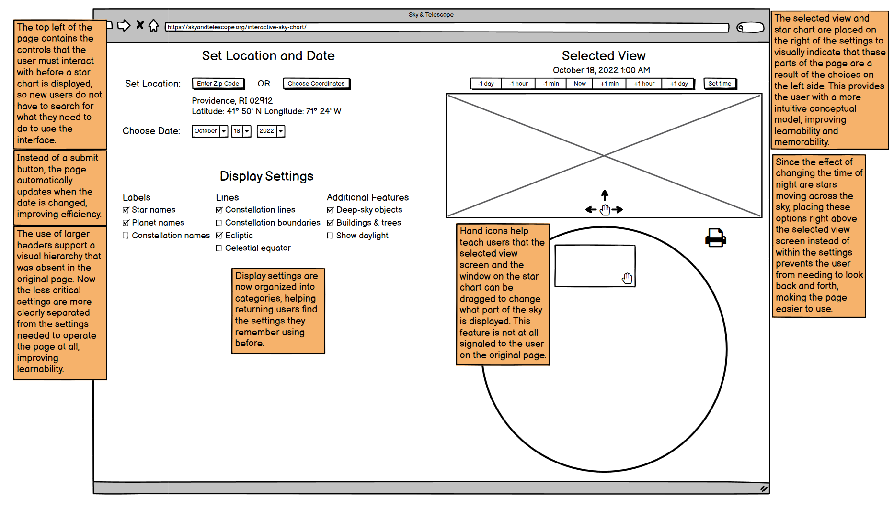
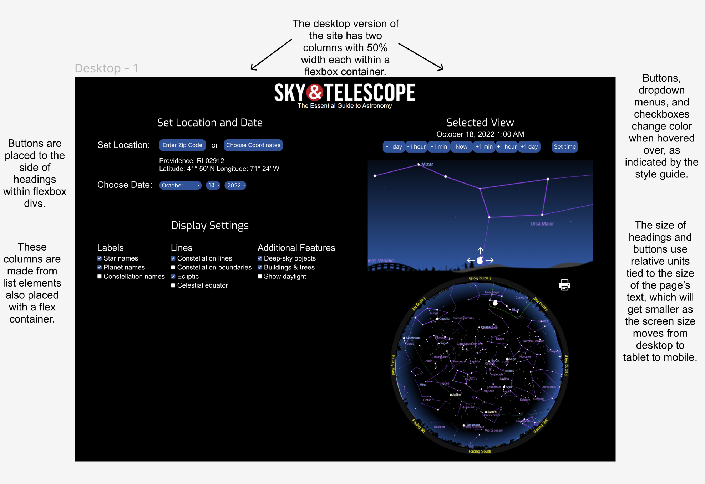
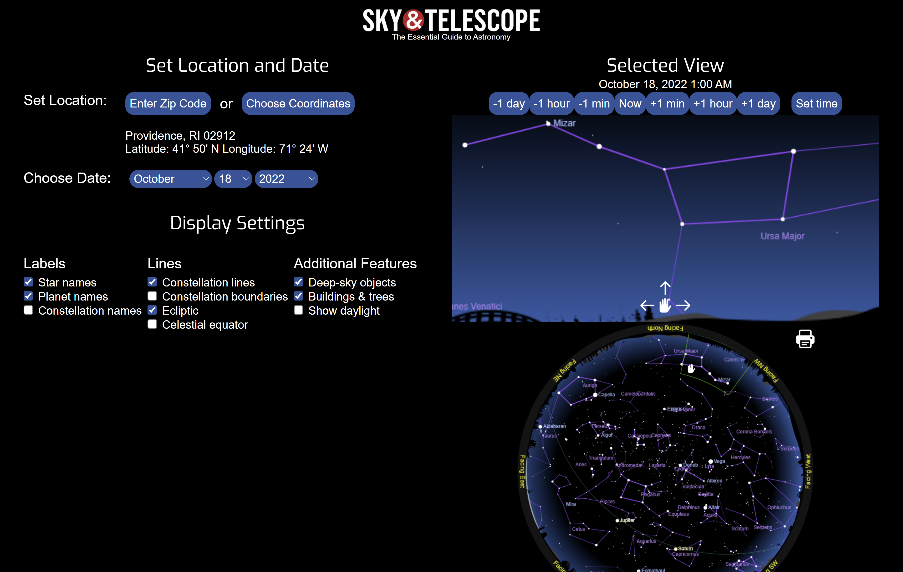

Overview
Toward the beginning of the course, I learned how to analyze a webpage for its usability, learnability, and memorability.
To test these skills, I identified usability problems with an existing website and
went through the process of redesigning and developing an improved version with greater responsiveness.
The flawed webpage I chose to redesign was this night sky tracker:

Process
First, I divided the issues I observed with the webpage into the categories of usability, learnability, and memorability.
| Usability |
Learnability |
Memorability |
- In order to update the date or time, a submit button must be pressed, which is less efficient than automatically
updating the page when the date or time is changed.
-
On mobile, the star chart shrinks such that pieces of text overlap one another, making it difficult to read
the chart's information.
-
On mobile, you cannot press the change time buttons while also viewing how the sky image moves as a result, so
the user is required to scroll back and forth to see the effect of their actions.
|
- The controls for setting the date and location are the only settings needed to begin using the page,
so these options should be separated in the top left. Currently, it is difficult for new users to determine what they need to interact with.
-
The area of the sky that is displayed can be moved by dragging the window on the sky chart, a feature that is not at
signaled to the user.
-
There is no clear hierarchy, as headers have barely more weight than other text, and the interactable components
are mostly not aligned with one another.
|
- The "Display Options" are not organized, making it difficult for a returning user to remember where certain
settings are located.
-
Returning users who recall changing what part of the sky is displayed by clicking and dragging might
drag the sky image itself, which does not work. This feature could be included to eliminate the need for users
to remember exactly where this control is located.
|
Then, I designed low fidelity and high fidelity prototypes showcasing how the page could be redesigned.
I made similar prototypes for the tablet and mobile versions of the page.


Finally, I developed the redesigned page.
Result
You can view the final redesigned page here.

Skills Developed
- Scrutinizing interfaces with a keen eye for usability.
- Designing interfaces with new and returning users in mind.
- Developing webpages that are responsive to a variety of screen sizes.